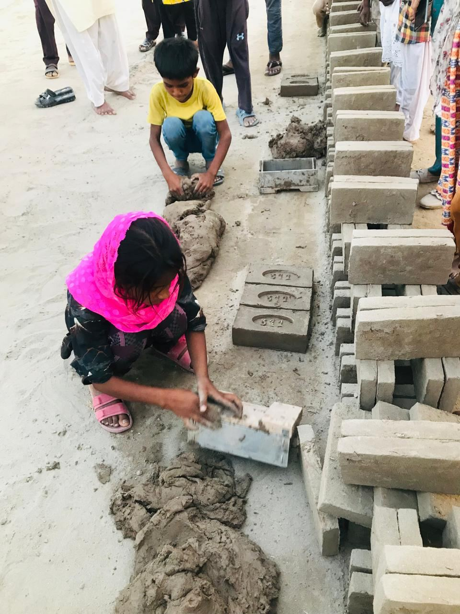

Freedom International's Brick Kiln Livelihood Restoration Project exists to help vulnerable families escape the cycle of debt and poverty through sustainable, dignified livelihood opportunities.
Rather than offering temporary financial assistance, our ministry seeks to create lasting transformation — removing the burden of overwhelming debt, equipping families with income-generating businesses, and walking alongside them as they build a stable and self-sufficient future.
This project is founded on biblical compassion, responsible stewardship, transparency, and accountability. Every decision we make is guided by the conviction that each family we serve is worthy of dignity, and that every gift entrusted to us is a sacred trust.
To restore hope, dignity, and financial independence to brick kiln families by providing practical opportunities that enable them to support themselves with confidence and purpose.
Many brick kiln families remain trapped in poverty because of debt. Even when they long to work hard and improve their circumstances, that debt stands as an immovable barrier between them and a better future.
Temporary financial assistance may relieve today's crisis, but it rarely changes tomorrow. Sustainable employment, by contrast, creates lasting change. Our goal is to give families the opportunity to build a future — not simply to survive another day.

Our ministry will:
Our ministry does not seek to replace one burden with another. Our purpose is to help families become financially stable — without placing unnecessary pressure upon them.
We believe that sustainable employment creates far greater dignity than long-term dependence ever could.